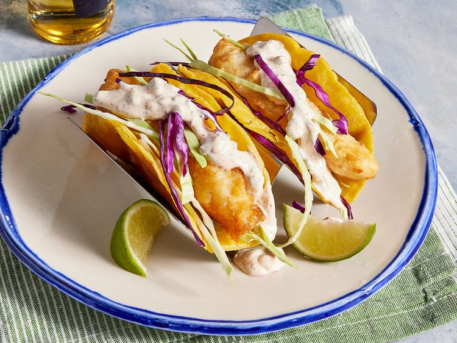

Tacos

Fish Tacos
You don't have to leave your house to enjoy perfect fish tacos!
This beer-battered fish taco recipe, topped with a homemade white sauce
and fresh cabbage, will quickly become a mainstay in your rotation.
Ingredients
- Fish
- Batter
- Spices
- Tortillas
- Salsa
- Cabbage
Steps
- Make the beer batter.
- Make the white sauce.
- Dust the fish in flour, then dip in the batter.
- Fry the fish until golden brown.
- Serve on tortillas with the sauce and cabbage.
Home